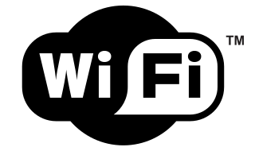

A Wi-Fi (WiFi, Wifi vagy wifi), az IEEE által kifejlesztett vezeték nélküli mikrohullámú kommunikációt (WLAN) megvalósító, széleskörűen elterjedt szabvány (IEEE 802.11) népszerű neve. A Wi-Fi, az elterjedt nézetekkel szemben, nem az angol Wireless Fidelity kifejezésnek a rövidítése. Az elnevezést egy marketingcég találta ki játékosan utalva a Hi-Fi/hifi szóra, csak később igyekeztek rövidítésként aposztrofálni és úgy reklámozni.
Hedy Lamarr színésznő és George Antheil zeneszerző 1942-ben szabadalmaztatta azt a szórt spektrumú technikát, ami később a wifi technológiai alapját adta. Így a wifit sokáig csak az amerikai haditengerészet használta, amíg 1985-ben el nem készültek a civilek által is használható vezeték nélküli hálózatok.
Fontosabb szabványváltozatok:
| Szabvány | Maximális sávszélesség | Beltéri hatótávolság |
|---|---|---|
| 802.11b | 11 Mb/s | kb. 38 m |
| 802.11g | 54 Mb/s | kb. 38 m |
| 802.11n | 600 Mb/s | kb. 70 m |
| 802.11ac | 1300 Mb/s | kb. 140 m |
A vezeték nélküli átvitelnél igen fontos a titkosítás. Wi-Fi titkosítási szabványok: